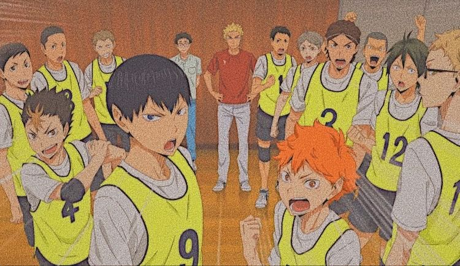

H A I K Y U U ! !

S I N O P S E
Hinata Shoyo, um adolescente do ensino médio que sonha em ser jogador de voleibol depois que assiste um campeonato pela tv. Alguns anos depois por pura determinação resolve aperfeiçoar suas táticas, com muitas dificuldades por razão de sua altura, o garoto resolve criar um clube de volei em sua escola. No ínicio, ninguém se juntou a ele, porém mais tarde alguns outros estudantes apareceram. A equipe foi selecionada para um campeonato do qual acabam perdendo pelo time favorito da plateia e claro o craque favorito que é proclamado "rei da quadra", Kageyama Tobio o que estimula Hinata a superar o rapaz.O adolescente aprende as técnicas de kageyama que também aprende a conviver em equipe;
Gêneros: Comédia, ação, drama, esporte